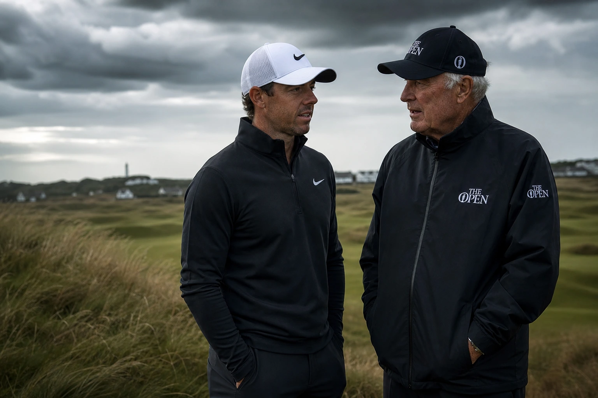

Days after a flat T-32 at the U.S. Open, Rory McIlroy skipped this week's Travelers Championship — a $20 million Signature Event — and flew to Royal Birkdale instead, scouting the course three weeks before The Open. While he was there, he ran into Nick Faldo, in England for Sky Sports' Open coverage, who pulled him aside for an impromptu interview. The detail that makes it more than a chance meeting: Faldo is the man McIlroy drew level with on six career majors at this year's Masters, and Birkdale is where Faldo played his very first Open 50 years ago.

The Meeting That Wasn't Staged — and Why That Matters
It was a genuine bump-in, not a PR sit-down. McIlroy was at Royal Birkdale on Thursday getting early reps on the links, and Faldo happened to be there doing his own preparation for Sky Sports' Open coverage. The two crossed paths on the course, and Faldo — never one to waste a moment — grabbed his fellow major champion for a short, off-the-cuff interview that later went up on his social channels.
The symmetry here is not incidental. Faldo and McIlroy are now tied on six career major championships apiece — a club McIlroy joined when he completed his Masters win and career Grand Slam earlier this year. And Birkdale holds deep personal meaning for Faldo, who made his Open debut at this very course half a century ago. So this was not a reporter quizzing a player. It was one six-time major winner picking the brain of another, on a course soaked in the elder man's own history. The setting wrote the story before either man said a word.
Turning Down $20 Million: What McIlroy's Schedule Actually Signals
The Travelers Championship is a $20 million Signature Event — the richest tier of regular PGA Tour tournament — and McIlroy passed on it. That is the third time this year he has turned down one of those high-value events. When a pattern shows up three times, it stops being a coincidence and starts being a policy.
Instead of flying to Connecticut, McIlroy flew home to England, where he has based his family for the summer, and used the open week to get a head start on links golf. The message is impossible to misread: money is no longer the force organising his calendar. The majors are. With his sole Open Championship title now over a decade old — won at Royal Liverpool in 2014 — McIlroy is treating preparation for golf's oldest and most romantic major as more valuable than a guaranteed payday in Cromwell. For a player who has spent years managing expectations around the career Grand Slam, this is the clearest possible sign that the psychological weight has lifted and a new, laser-focused version of the plan is in place.
"Turning down twenty million dollars to go walk a links course alone is the clearest possible signal of where his head is."
Why Royal Birkdale, and Why Now? The Logic of Early Scouting
McIlroy explained to Faldo that he has been playing every major venue early this season, and that the approach has been working. The clearest proof is Augusta National, where he made repeated preparatory trips before finally landing the green jacket and completing the career Grand Slam that had shadowed him for the better part of a decade. For McIlroy, early scouting is no longer a theory — it is a demonstrated method with a documented result.
The logic is even stronger for links golf. Links courses are a fundamentally different sport from the parkland and resort-style tracks that dominate the PGA Tour calendar. Firm turf, unpredictable bounces, greens that respond more to trajectory than spin, and wind that can rewrite every yardage you have memorised — these are conditions you cannot fake your way into feeling comfortable with in a single Tuesday practice round. Getting up to Birkdale three weeks early, walking it in real weather, calibrating where the course has changed since the last Open in 2017, is the kind of unglamorous, deliberate preparation that separates a contender from someone who shows up hoping.\p>
What McIlroy Observed at Birkdale — and Why the Changes Matter
McIlroy has long rated Royal Birkdale as one of the finest courses on the Open rotation, and he told Faldo he was genuinely excited to return. But excitement was not the only motivation for the trip. He noted specifically that the course has changed since the 2017 Open, pointing to different green complexes and some altered holes.
That detail is the entire reason early scouting exists. A course McIlroy already knows well from his career experience has been tweaked enough that his stored mental notes are partially out of date. Old yardages, preferred angles, familiar miss zones — all of that is subject to revision when green complexes shift. Walking the course now, before the field descends in July, lets him update that internal map under his own power and at his own pace. His 2017 performance here — tied fourth, the year Jordan Spieth won — means he arrives with good historical data to build on. He just needs to update it.
The Open Run-In: McIlroy's Schedule Into Birkdale
McIlroy is not arriving at The Open cold. He plans to play the Genesis Scottish Open the week before, an event he won in 2023 and finished runner-up at last year. That gives him competitive links reps in genuine tournament pressure, at a course that mirrors many of the same conditions he will face at Birkdale. As he described it to Faldo: a card in his hand right before the major.
The runway he has constructed is methodical and deliberate. Scout Birkdale three weeks out to update his course knowledge. Sharpen up in real tournament conditions at the Scottish Open. Arrive at the major already tuned to links golf, with competitive confidence intact. The Open at Royal Birkdale runs July 16 to 19, its first hosting since Spieth's dramatic 2017 victory, and McIlroy arrives chasing his second major of 2026 and what would be the seventh of his career — the number that would separate him from the man he met at Birkdale.
The Faldo Dimension: Poetry on a Links
The Faldo encounter gives this week's trip its meaning beyond logistics. Six majors apiece. One man at the end of his journey, covering The Open for television from the course where he began it. The other man mid-stride, chasing the seven that would pull him clear. It is the kind of moment that sports produces naturally but rarely — two careers in dialogue at the exact right location, at the exact right time.
Faldo did not quiz McIlroy about pressure or rivalry or the record. He just asked good questions and let the younger man talk. And McIlroy did not say anything earth-shattering. He was measured, thoughtful, and specific about the course. But none of that is the point. The point is that McIlroy was there at all — walking the fairways in late June while the rest of the Tour chased six-figure paychecks in Connecticut. That fact, more than anything either man said, told you exactly where Rory McIlroy's head is in the summer of 2026.
The Raw Read
This is a small story that quietly tells a big one. A player who has spent much of his career being defined by what he hadn't won has now won it. And the most compelling evidence that the Masters changed him is not anything he said at Augusta. It is a Thursday afternoon at Royal Birkdale, three weeks before The Open, walking fairways in the wind while the richest regular tournament on tour plays out without him.
He has one half of a historic double already locked in. The second half starts at the Scottish Open, intensifies on the Birkdale links, and culminates over four days in July. McIlroy has done the boring, deliberate work. The Faldo moment just adds the poetry — two men tied on six, one beginning his Open story here fifty years ago, the other coming back to write the next chapter of his own. The story has been set up. Now he has to close it.
Frequently Asked Questions
- What happened between Rory McIlroy and Nick Faldo at Royal Birkdale?
- Faldo ran into McIlroy during McIlroy's scouting trip to Royal Birkdale and recorded an impromptu interview for Sky Sports, for whom he is covering The Open Championship.
- Why did McIlroy skip the Travelers Championship?
- He chose to prioritise preparation for The Open over the $20 million Signature Event, flying to England to scout Royal Birkdale instead. It was the third signature event he skipped in 2026.
- Why is McIlroy scouting Birkdale so early?
- He says playing major venues early has worked for him this season, including ahead of his Masters win, and links golf in particular requires getting reacquainted with the conditions well in advance.
- What did McIlroy say about Royal Birkdale?
- He called it one of the best courses on the Open rotation and said he was excited to return, while noting it has changed since 2017 with different green complexes and altered holes.
- When is The Open Championship at Royal Birkdale?
- July 16 to 19, 2026. It is Birkdale's first Open since Jordan Spieth won there in 2017.
- Will McIlroy play in an event before The Open?
- Yes. He plans to play the Genesis Scottish Open the week before, an event he won in 2023, to get competitive links reps immediately before the major.
- Why is the McIlroy–Faldo meeting significant?
- Both men are tied on six career major championships. Faldo made his Open debut at Birkdale 50 years ago. Their on-course meeting was unscripted — and the location made it resonate far beyond a casual chat.